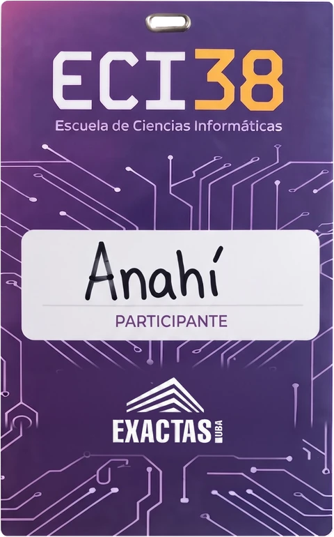
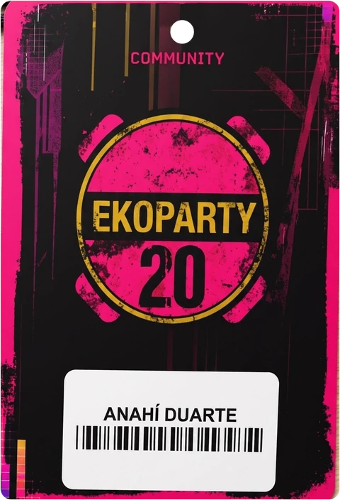
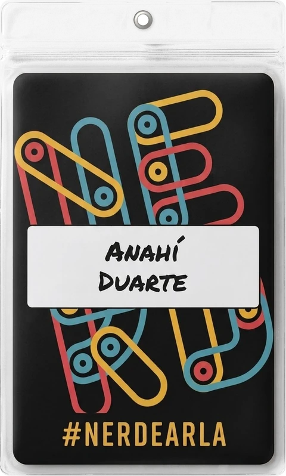
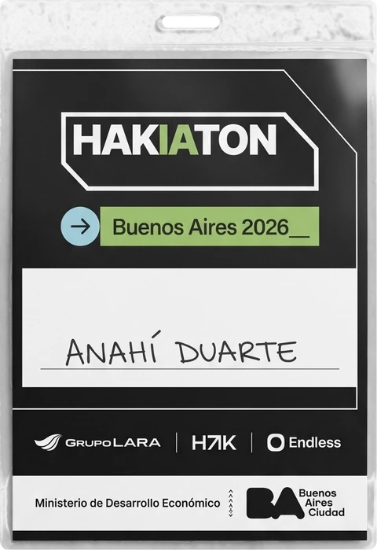
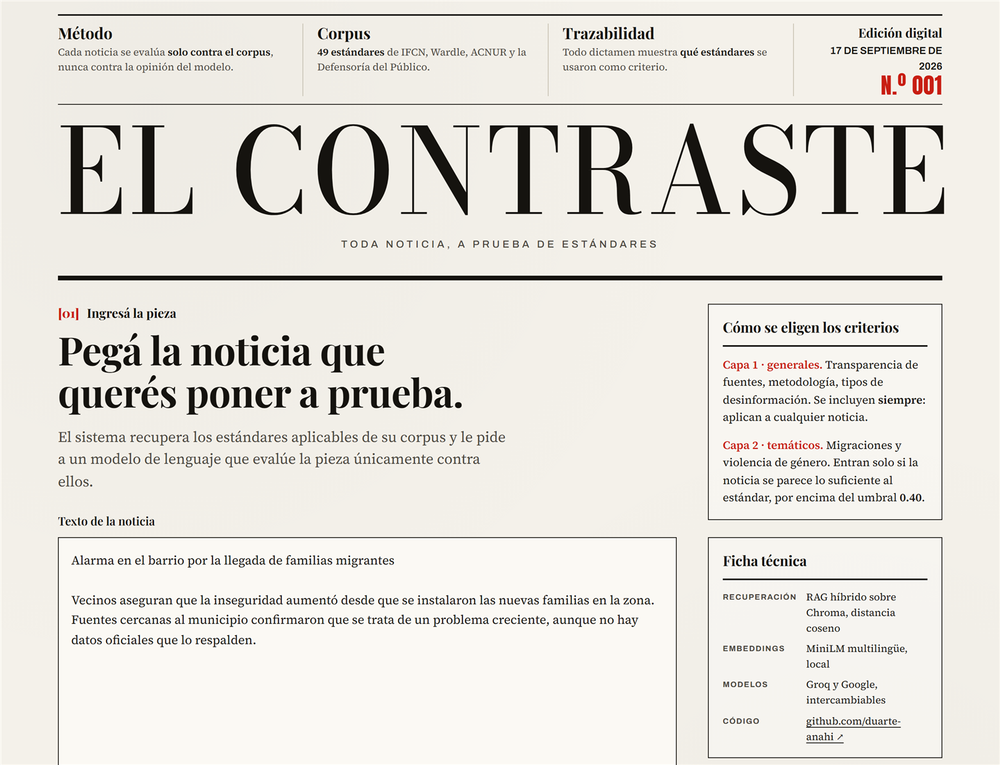
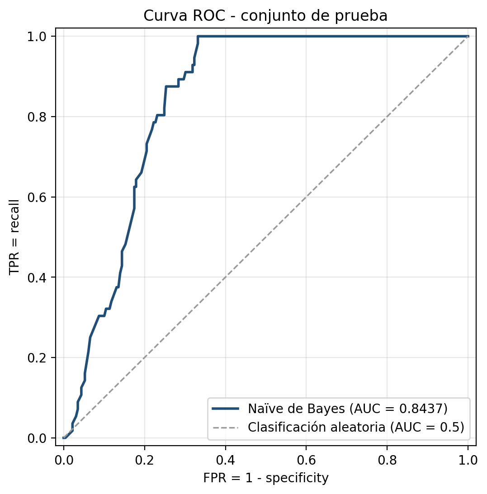

[00]Portfolio 2026
Desarrollo proyectos de inteligencia artificial, aplicando aprendizaje automático y redes neuronales, y sumando la integración de modelos de lenguaje.
Busco comprender cómo aprenden los modelos y convertir ese conocimiento en herramientas útiles, transparentes y evaluables.
[—]Sobre mí
Elijo desarrollar herramientas de inteligencia artificial para complementar a las personas, priorizando modelos que puedan ejecutarse de forma local.
Cuando el sistema se equivoca, no me conformo con mirar la métrica de error. Me interesa investigar a fondo los resultados para explicar exactamente qué pasó y por qué.
[—]Herramientas
[—]Índice
[01]Modelos de lenguaje
Un tutor socrático para trabajos académicos: guía con preguntas y no escribe por el estudiante.
[AVANZAR] y la interfaz avanza la barra de progreso.
[01]Interfaz
Fig. 1 — El borrador va en el editor; la consigna y las dudas, en el chat. El tutor lee las dos cosas antes de responder.
Los límites están escritos en el prompt: no redacta trabajos, no inventa citas y no avanza de etapa sin una respuesta concreta del estudiante.
[02]Convolutional Neural Network
Diseño, entrenamiento y diagnóstico de una red neuronal convolucional para clasificar imágenes en 8 clases.
[02]Diagnóstico

Fig. 3 — Las dos versiones: la pérdida de validación sube desde la época 6 mientras la de entrenamiento sigue bajando.
Las dos versiones llegan al 99% en entrenamiento y se estancan cerca del 59% en validación: el modelo memoriza. Recortar el 75% de los parámetros no cambió nada, así que el límite está en los datos.
Lo aprendido: si la pérdida de validación sube mientras la de entrenamiento baja, hay que dejar de tocar capas y mirar los datos.
[03]Deep learning
Comprimir letras de 7×5 píxeles en solo dos números, y volver a reconstruirlas.
[03]Espacio latente

Fig. 4 — Cada carácter ubicado según sus dos valores latentes. Las formas parecidas quedan cerca.
Con 5% de ruido reconstruye bien; con 30% devuelve otro carácter. Con solo 32 muestras, la red memoriza en lugar de generalizar.
[04]RAG y verificación
Un auditor que evalúa una noticia contra un corpus de estándares periodísticos y muestra cuáles usó.

[04]Interfaz
Fig. 5 — La interfaz tiene forma de diario: se pega la noticia, se elige el modelo y el dictamen sale como nota de tapa.
Los embeddings corren en la propia máquina y las claves quedan en el backend. Cambiar de proveedor de modelo es una línea de configuración.
[05]Aprendizaje automático
Dos algoritmos clásicos implementados desde cero con NumPy sobre 45.000 solicitudes de préstamo.
h = (?, ?, ?, no) y deja 17 falsos positivos sobre sus propios datos de entrenamiento.[05]Resultados

Fig. 6 — Curva ROC del conjunto de prueba: AUC 0,84 sobre 145 umbrales distintos.
La accuracy de 0,77 engaña: 229 de los 285 casos son de una sola clase y el modelo no reconoce más de la mitad de los préstamos otorgados. El AUC muestra que el problema está en el umbral, no en el orden que produce el modelo.
[—]Contacto
El código de todos estos proyectos está en GitHub.